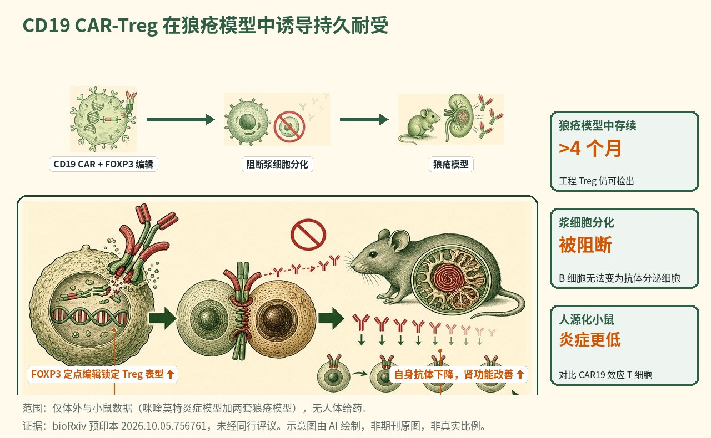

CD19 CAR 工程化调节性 T 细胞在实验性狼疮中驱动持久耐受
一篇预印本将 CD19 CAR 与通过同源定向修复敲入的组成型 FOXP3 相结合，制成 CAR19 工程化调节性 T 细胞（CAR19 EngTreg）；这些细胞携带典型 Treg 标志物、产生极少量炎症因子、阻断人浆细胞分化，并在两套小鼠狼疮模型中存续超过四个月，持续降低自身抗体并改善肾功能与组织病理。

- CD19 CAR 加组成型 FOXP3 敲入，产生稳定的工程化调节性 T 细胞
- 细胞以极少量炎症因子阻断人浆细胞分化
- 在两套狼疮模型中存续超过四个月
- 持续降低自身抗体，同时改善肾功能与组织病理
示意图概括了如何将 CD19 CAR 递送与组成型 FOXP3 的 HDR 敲入相结合，制成能够清除 B 细胞、阻断浆细胞分化并抑制自身反应性 T 与 B 细胞、从而在实验性狼疮中恢复耐受的 CAR19 EngTreg。
背景与未决问题
系统性红斑狼疮（SLE）是一种由自身抗体驱动的自身免疫病，自我耐受的丧失导致免疫复合物沉积与器官损伤，其中肾脏是常见且严重的受累靶器官，狼疮性肾炎是致残与致死的主要原因。过去几年，CD19 CAR T 细胞疗法通过深度清除 B 细胞、看似"重置"自身免疫区室，在难治性狼疮中取得了显著疗效。然而这种获益究竟有多持久、仅靠一过性清除 B 细胞是否足以重建长期耐受，仍是未决问题。
作者指出，SLE 中耐受的丧失由树突状细胞与自身反应性 T、B 细胞之间的滤泡外与生发中心相互作用驱动。仅清除 B 细胞的疗法基本未触及该环路的 T 细胞一侧，而传统 CAR 效应 T 细胞还可能引发细胞因子释放综合征等炎症毒性。本研究要解决的问题是：能否用单一的工程化细胞产品，把 CD19 CAR 的靶向能力与调节性 T 细胞促进耐受的生物学相结合，从而在不产生强烈炎症信号的情况下，同时控制自身反应性 B 细胞及帮助它们的 T 细胞。
研究设计
为构建这样的细胞，团队将 CD19 CAR 递送与 FOXP3 位点的同源定向修复（HDR）相结合。FOXP3 是调节性 T 细胞的主控转录因子；通过敲入一个在 CD4 T 细胞中驱动组成型、稳定 FOXP3 表达的构建体，作者既将本为常规的 T 细胞锁定在调节性程序中，又为其装备了 CD19 靶向 CAR。所得细胞称为 CAR19 工程化调节性 T 细胞（CAR19 EngTreg）。
研究随后经过一组分层模型推进。首先，体外人源实验表征工程细胞的表型、炎症因子产量及其对 B 细胞的功能影响。其次，人源化小鼠检验这些细胞能否在体内减少人 B 细胞数量，并比较其炎症特征与 CD19 CAR 效应 T 细胞的差异。第三，用鼠源版构建体，在短期咪喹莫特诱导的小鼠炎症模型中检验调节性细胞能否抑制急性炎症发作。最后，两套不同的小鼠狼疮模型检验核心假设：这些细胞能否存续、控制 B 与 T 细胞两方面的自身免疫，并在数月而非数周的尺度上保护靶器官。确切的队列规模、细胞剂量以及两套狼疮模型的具体身份在预印本全文中有描述，但现有摘要未予涵盖。
关键结果
稳定的调节性表型，仍能清除 B 细胞
工程细胞表达典型的调节性 T 细胞标志物，证实组成型 FOXP3 敲入产生的是真正的 Treg 样表型，而非常规效应细胞。关键在于，它们产生极少量炎症因子——这正是作者所追求的性质，以避免 CAR 效应 T 细胞相关的炎症毒性。尽管炎症因子谱安静，这些细胞仍保留了 CD19 CAR 赋予的功能：在体外阻断人 B 细胞向分泌抗体的浆细胞分化，直接针对致病性自身抗体的细胞来源。在 SLE 中，正是自身反应性 B 细胞向长寿命抗体分泌细胞的分化维持着自身抗体负荷，因此以可控、非炎症的方式阻断这一步是机制上颇具吸引力的目标。
人源化小鼠中炎症低于 CAR 效应 T 细胞
在人源化小鼠中，转输 CAR19 EngTreg 可减少 B 细胞数量。与 CD19 CAR 效应 T 细胞相比，工程化 Treg 以更低的炎症因子产量实现这一效果，并减轻组织炎症。这一头对头对比是其治疗论证的核心：它提示调节性形态能够在带来比当前临床所用效应细胞疗法更温和炎症特征的同时，实现 CD19 导向的 B 细胞控制。
咪喹莫特模型中急性炎症减轻
在短期咪喹莫特诱导的炎症模型中，鼠源 CAR19 EngTreg 减轻皮肤病理、缩小脾脏并降低炎症因子。该急性模型在体内证明，这些细胞的抑制功能可转化为可测量的炎症与免疫活化下降，而不仅是体外的 B 细胞效应。脾脏缩小作为淋巴扩增的一个粗略但有信息量的指标，与对活化免疫区室的广泛抑制相一致。
两套狼疮模型中的持久耐受
最重要的发现来自两套不同的小鼠狼疮模型。在两者中，CAR19 EngTreg 均存续超过四个月，表明是持久植入而非一过性效应。在此期间，细胞减少自身免疫性 T 与 B 效应群体，持续降低多种自身抗体，并改善肾功能与组织病理。综合这些读数，支持一个观点：单一工程化细胞可同时控制狼疮自身免疫的 B 细胞与 T 细胞两臂，并保护肾脏——这一器官的受累驱动了狼疮的大部分病患负担。摘要将这些报告为方向性改善，并未提供数值性效应量，后者在全文中。
机制解读
论文所证实的： 将 CD19 CAR 与 HDR 驱动的组成型 FOXP3 表达相结合，可生成表现为调节性细胞（典型标志物、低炎症因子）、同时保留 CD19 导向抗 B 细胞活性（包括抑制浆细胞分化）的 CD4 T 细胞。在体内，这些细胞以低于 CAR 效应 T 细胞的炎症减少 B 细胞、钝化急性炎症，并在狼疮模型中存续数月，同时降低自身反应性 T 与 B 效应群体、减少自身抗体并保护肾脏。
作者假设： 作者提出，由于 EngTreg 能抑制多种自身免疫效应细胞类型，而不仅是清除 B 细胞，它们或可在不产生常规 CAR 效应细胞那样高水平炎症介质的情况下促进长期耐受。他们将 CAR19 EngTreg 定位为治疗 B 细胞介导自身免疫病的一条持久途径，能够长期调节自身反应性 B 与 T 细胞。
局限与不确定性
- 这是一篇 bioRxiv 预印本，未经同行评审；结论及任何数值在修订后可能改变。
- 数据为临床前，来自体外人源实验、人源化小鼠与小鼠狼疮模型；没有人体疗效或安全结局。
- 确切的队列规模、细胞剂量、所用具体狼疮模型及所测各自身抗体在现有摘要中未说明。
- 多位作者为 GentiBio 现任或前任员工，资深作者为相关专利的发明人，这是相关的经济利益；四个月以外的持久性、B 与 T 细胞联合抑制带来的感染风险及制造工艺在摘要中未涉及。
临床与产业意义
若该方法经同行评审验证并可转化，CAR19 EngTreg 将代表在当前 CD19 CAR T 细胞狼疮疗法之上的概念跃进：不再是一过性清除 B 细胞并依赖免疫"重置"，而是以工程化调节性细胞持续抑制维持自身免疫的 B 细胞及其辅助 T 细胞，并可能带来更低的炎症毒性特征。四个月以上的存续与狼疮模型中的器官级保护，正是与持久、无药缓解这一核心临床问题最相关的特征。多位作者与 GentiBio 相关，该公司正在开发针对 B 细胞驱动自身免疫病的 CAR 工程化调节性 T 细胞疗法，因此这项学术工作与一项产业转化努力并行。然而其直接贡献是临床前概念验证：人体试验、与现有清淋 CAR 方案的头对头安全性比较，以及细胞衰减后耐受是否维持的证据，均仍待完成。